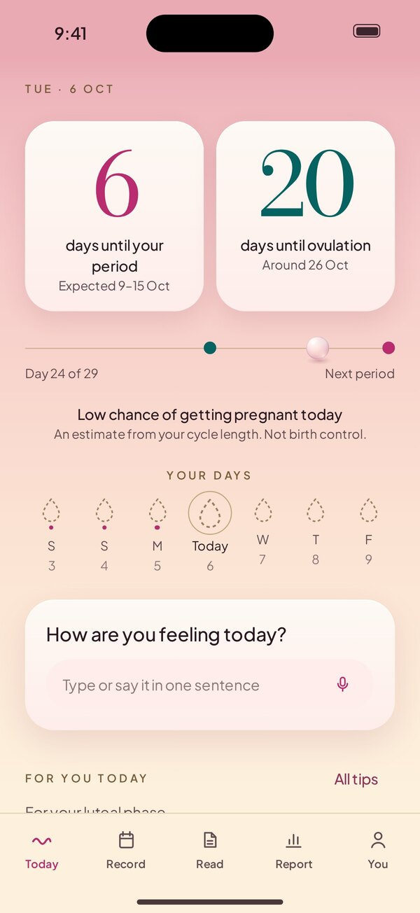
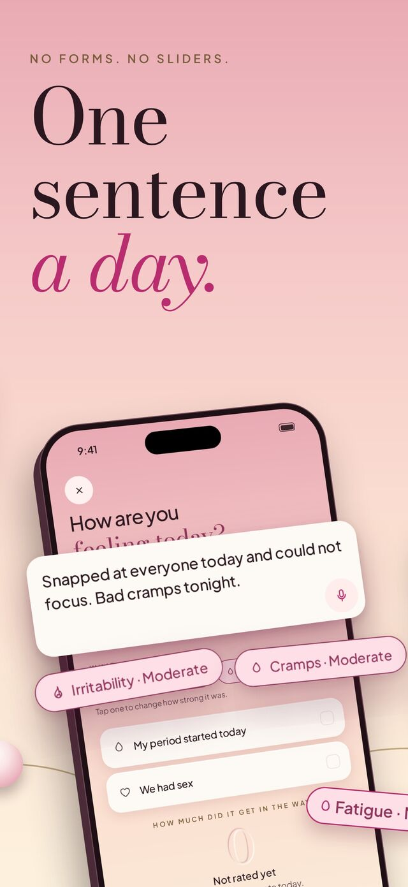
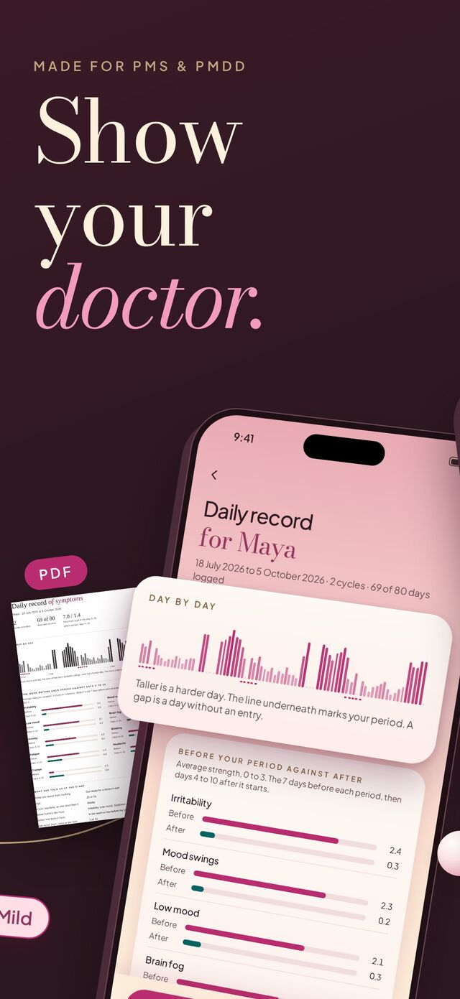
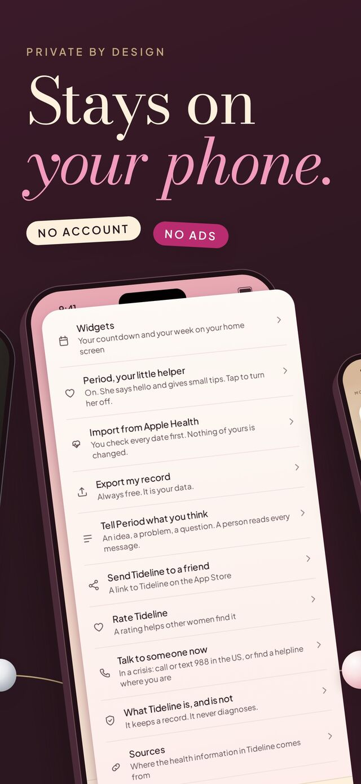

See your next period coming, write one sentence a day, and bring a clear record to your doctor.
Tideline counts down to your next period and to ovulation, and shows the predicted window rather than one exact day. Once two cycles are recorded, the prediction learns from your own dates.
Already logging somewhere else? Past period dates can be read from Apple Health, and you see them before anything is added.

After ovulation comes the luteal phase. In the days before a period many people notice a shorter fuse, low mood, cravings or tiredness (NHS).
Write one sentence about your day, typed or spoken. Tideline picks out the symptoms and shows what you logged around the same day in earlier cycles.

Doctors usually want daily notes from at least two cycles before they talk about PMDD (IAPMD). That's hard to remember in a ten-minute appointment.
After two cycles, Tideline puts the week before each period next to the week after, day by day, in a PDF you can print or send. It describes what you logged and doesn't diagnose anything.

No sign-up and no ads. Your entries are kept on your iPhone and come along in your iPhone backup.
If you want, your partner can get a heads-up before your harder week. You choose what he sees, and he never sees what you write.

Tracking, predictions and the daily sentence are free. Tideline Plus adds the insights and the doctor's report.
Yes. You log your days the same way; the report shows how the week before your period compares with the rest of your cycle, whatever the reason.
Bring your past dates in through Apple Health, or mark any past day as the day your period started.